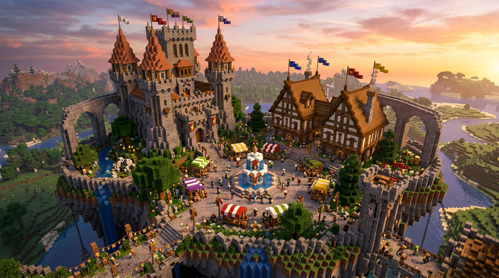
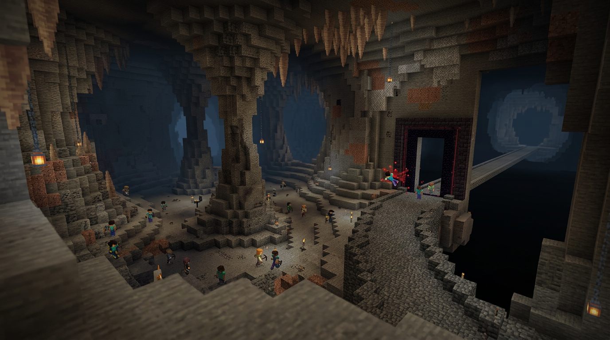
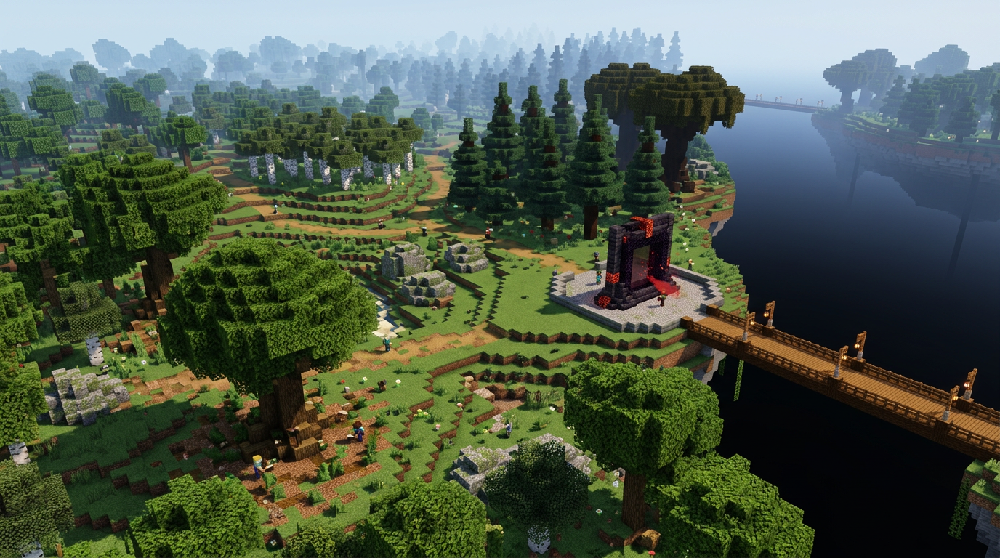
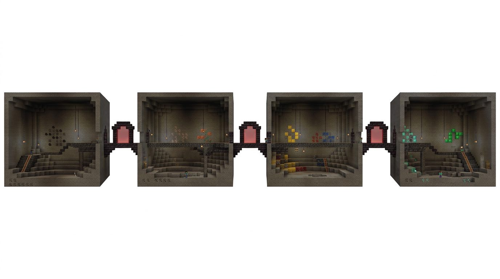
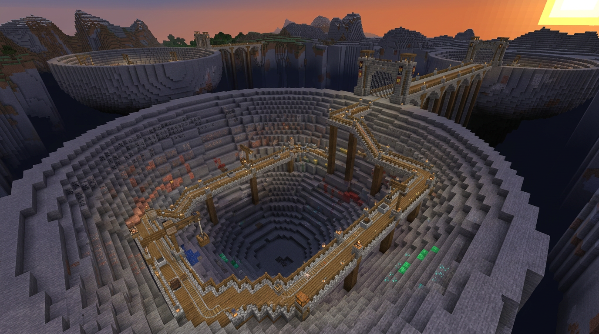
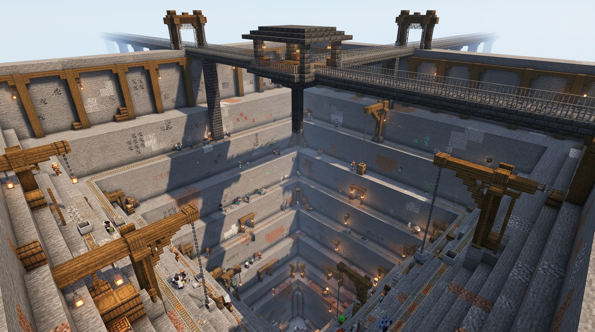
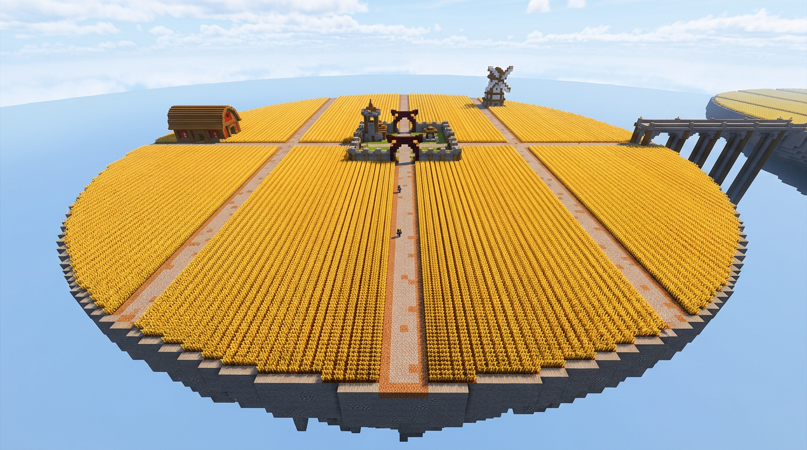

Spawn médiéval
Place centrale, fontaine, château, marché et arches vers les quatre activités.

Cavernes organiques géantes
Chaque zone mesure 2 048×2 048 blocs, dépasse cent blocs de hauteur et accueille plusieurs dizaines de joueurs. Le portail verrouillé repousse les joueurs sans le rang.

Forêts classées géantes
Relief naturel, arbres aux silhouettes variées, chemins organiques et portail répulsif. Chaque essence occupe une île dédiée de 2 048×2 048 blocs.

Ancien schéma v17
Archive utile pour la progression en quatre zones, mais remplacée par les cavernes organiques beaucoup plus vastes de la version 0.18.

Ancien concept de mines ouvertes
Archive visuelle non utilisée, remplacée par les cavernes organiques géantes de la version 0.18.

Ancien concept Prison/Tycoon
Archive remplacée par les grottes minières fermées et leurs barrières de rang serveur.

Champ Tycoon 5× plus grand
5 120 blocs de diamètre, aucune eau visible, rangées quasi infinies et décorations en périphérie.